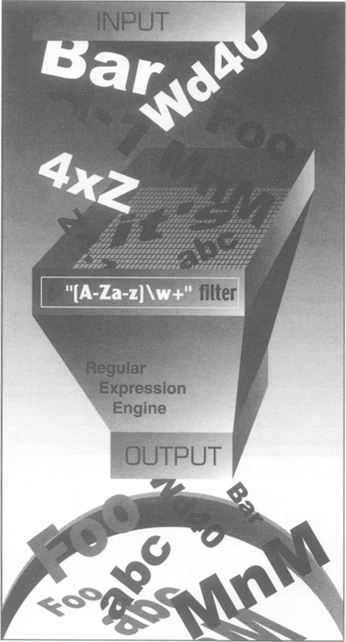

| < BACK | Make Note | Bookmark | CONTINUE > |
Introduction/Motivation
Manipulating text/data is a big thing. If you don't believe me, look very carefully at what computers primarily do today. Word processing, "fill-out-form" Web pages, streams of information coming from a database dump, stock quote information, news feeds—the list goes on and on. Because we may not know the exact text or data which we have programmed our machines to process, it becomes advantageous to be able to express this text or data in patterns which a machine can recognize and take action upon.
If I were running an electronic mail (e-mail) archiving company, and you were one of my customers who requested all his or her e-mail sent and received last February, for example, it would be nice if I could set a computer program to collate and forward that information to you, rather than having a human being read through your e-mail and process your request manually. You would be horrified (and infuriated) that someone would be rummaging through your messages, even if his or her eyes were supposed to be looking only at timestamps. Another example request might be to look for a subject line like "ILOVEYOU" indicating a virus-infected message and remove those e-mail messages from your personal archive. So this begs the question of how can we program machines with the ability to look for patterns in text.
Regular Expressions (REs) provide such an infrastructure for advanced text pattern matching, extraction, and/or search-and-replace functionality. REs are simply strings which use special symbols and characters to indicate pattern repetition or to represent multiple characters so that they can "match" a set of strings with similar characteristics described by the pattern (Figure15.1). In other words, they enable matching of multiple strings—an RE pattern that matched only one string would be rather boring and ineffective, wouldn't you say?
Figure 15.1. You can use regular expressions, such as the one here which recognizes valid Python identifiers. "[A-Za-z]\w+" means the first character should be alphabetic, i.e., either A–Z or a–z, followed by at least one (+) alphanumeric character (\w). In our filter, notice how many strings go into the filter, but the only ones to come out are the ones we asked for via the RE.
Python supports REs through the standard library re module. In this introductory subsection, we will give you a brief and concise introduction. Due to its brevity, only the most common aspects of REs used in every day Python programming will be covered. Your experience, will of course, vary. We highly recommend reading any of the official supporting documentation as well as external texts on this interesting subject. You will never look at strings the same way again!
NOTE
Throughout this chapter, you will find references to searching and matching. When we are strictly discussing regular expressions with respect to patterns in strings, we will say "matching," referring to the term pattern-matching. In Python terminology, there are two main ways to accomplish pattern-matching: searching, i.e., looking for a pattern match in any part of a string, and matching, i.e., attempting to match a pattern to an entire string (starting from the beginning). Searches are accomplished using the search() function or method, and matching is done with the match() function or method. In summary, we keep the term "matching" universal when referencing patterns, and we differentiate between "searching" and "matching" in terms of how Python accomplishes pattern-matching.
Your First Regular Expression
As we mentioned above, REs are strings containing text and special characters which describe a pattern with which to recognize multiple strings. We also briefly discussed a regular expression alphabet and for general text, the alphabet used for regular expressions is the set of all uppercase and lowercase letters plus numeric digits. Specialized alphabets are also possible, for instance, one consisting of only the characters "0" and "1." The set of all strings over this alphabet describes all binary strings, i.e., "0," "1," "00," "01," "10," "11," "100," etc.
Let us look at the most basic of regular expressions now to show you that although REs are sometimes considered an "advanced topic," they can also be rather simplistic. Using the standard alphabet for general text, we present some simple REs and the strings which their patterns describe. The following regular expressions are the most basic, "true vanilla," as it were. They simply consist of a string pattern which matches only one string, the string defined by the regular expression. We now present the REs followed by the strings which match them:
| RE Pattern | String(s) Matched |
|---|---|
| foo | foo |
| Python | Python |
| abc123 | abc123 |
The first regular expression pattern from the above chart is "foo." This pattern has no special symbols to match any other symbol other than those described, so the only string which matches this pattern is the string "foo." The same thing applies to "Python" and "abc123." The power of regular expressions comes in when special characters are used to define character sets, subgroup matching, and pattern repetition. It is these special symbols that allow a RE to match a set of strings rather than a single one.
| Last updated on 9/14/2001 Core Python Programming, © 2002 Prentice Hall PTR |
| < BACK | Make Note | Bookmark | CONTINUE > |